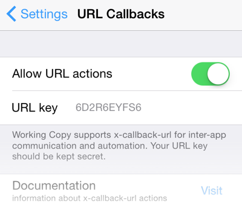
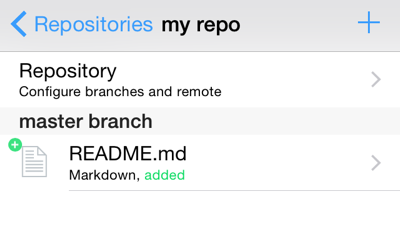
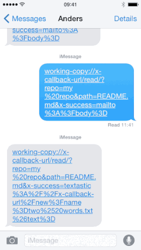

To allow integration with other applications and automated workflows Working Copy can be opened with special URL schemes and controlled with x-callback-url. Commands that change data or read content out of Working Copy is protected by a secret key.
You can open Working Copy and make it go to a specific screen with a URL:
working-copy://open?repo=my%20project&path=README.md&mode=content working-copy://open?repo=my%20project&commit=23f387&mode=status working-copy://open?repo=https%3A%2F%2Fgithub.com%2Flibgit2%2Flibgit2&branch=develop working-copy://open?repo=my%20project&path=README.md&mode=preview
Here repo is either the name of a repository as seen in the list of repositories or the full remote URL. If you specify a path, Working Copy will show the given directory or file and if you specify a commit hash (or prefix) you are shown the given commit. You can specify one of path, commit or branch but not more than one.
You can control what to show such that mode=content shows file content tab or directory contents for directories and repository; mode=changes shows the Changes-tab and is only valid for files, mode=status shows the Status-tab for files or Status screen for directories and repositories while mode=preview shows the Content-tab in preview mode for files supporting this. You can omit the mode parameter to leave mode unchanged.
Jump to specific lines in the text file opened with the line=123 parameter and show messages with either error=red%20%text or message=blue%20text to inform the user of something related to the file. If you include line= but no path= the app uses the path of current file. This can be used with shortcuts activated through the share sheet that validate the current file.
Make sure all parameters are URL-coded and that space is percent- rather than plus-encoded.
You can ask Working Copy to open the clone-dialog with a specific URL awaiting the users confirmation:
working-copy://clone?remote=https%3A%2F%2Fgithub.com%2Fgit%2Fgit.git
If you need to make a link that shows a given remote repository inside Working Copy, without knowing whether the user has a existing clone, use the show command that will open the repository if one exists with that remote and otherwise initiate cloning.
working-copy://show?remote=https%3A%2F%2Fgithub.com%2Fgit%2Fgit.git
The app supports using log files in the context of the repository contents and it can be useful to import and show these with a URL:
working-copy://import-log?lines=first%20line%0Asecond%20line
The lines parameter is mandatory and you can use repo to specify either a repository name or remote url the log refers to, timestamp to indicate the time the log was recorded as unix time and kind to one of import, bitrise, circleci, jenkins, buddy, fetch, push, pull, clone where kind=import is the default.
To support workflows and automation, Working Copy has rich support for x-callback-url commands.
Because the commands allow reading and writing your sourcecode, they are protected by a key parameter which must match a random alphanumeric code created when you first launch Working Copy on a new device. You can edit this key inside settings to get the same code for all your devices making it easier to reuse scripts, but you should make sure never to use a key value you found in some public script, as this would be equivalent to sharing a password with everyone else.
The following commands are supported, where a 🔒 indicates that the push feature must be unlocked for that command to be available.
URLs for x-callback-url must have the form:
working-copy://x-callback-url/<command>/?x-success=<escaped-url>&repo=...&key=...
If you include a x-error parameter it will be used to deliver errors, otherwise errors are shown inside Working Copy. Including x-success is also possible.

To avoid very long examples the key parameter will not be included in every example here, but it IS required for every x-callback-url command. In order to foil brute-force attempts at guessing the key, Working Copy will show errors related to key inside the app, but will not be calling x-error.
Most commands requires the repo parameter that specifies which repository the command is about. This can either be the name of the repository as seen in the list of repositories in the outermost view of the app or the full remote url of the repository. Remember to url-encode repo just like all other parameters. Space needs to be percent- rather than plus-encoded. If you specify repo=$current the repository shown inside the app will be used.
Many commands require the path parameter which specifies the file or directory the command will act on. Paths are specified relative to the root of the repository where a empty path is the root directory and this the entire repository. Some commands will ask the user to pick a file or directory if no path is specified and others will just use the root directory as its default. The details are documented in the section for each command. You can use path=$current to specify the currently shown path of a file or directory where the empty string will be substituted if you are not looking at any path.
 Write to existing or new files with the write command. If you include a text parameter this will be the content written to the file at the given path. The text parameter is transferred as UTF-8 but will be written in the encoding of the existing file or UTF-8 for new files.
working-copy://x-callback-url/write/?key=123ABC&repo=my%20repo&path=README.md&text=hello%20there
If you need to write images or other binary files you can transfer the content as base-64 by using the parameter base64= instead of text=. You need to URL-encode after base-64 encoding since the characters + and / occur after base-64 coding. This can also be handy if you want to overwrite the encoding of a existing file.
If you do not include either a text or base64 parameter the clipboard content is written or you can include clipboard=1 as a more direct way to write from the clipboard.
If no path parameter is specified the user will be asked to pick a file and if no repo is specified either the user will start out by picking a repository. In these situations you can suggest a filename with the filename parameter and uti to indicate the Uniform Type Identifier such that the user can be warned before saving into a file where the name suggests a different type of data. If no uti is specified the default is either "public.plain-text" or "public.item" depending on whether content is specified with text or base64.
working-copy://x-callback-url/write/?text=hello%20there&filename=test.txt&uti=public.text
Working Copy supports exporting files with a filename with special information such that it can be identified as a specific file in a certain repository even though the original filename is used multiple times. To get this behaviour in x-callback-url use the write command with a path but no repo parameter. The path must be recognized for this to work or you will get a error that the file is not known.
You can include askcommit=1 to be asked to commit and push the file after saving.
You control how and when to write to the file with the mode parameter. The default mode=safe will create new files or overwrite non-modified files but refuse to write to files with uncommitted changes. When the user pick the file to write to you are allowed to overwrite files with uncommitted changes and you can force this behaviour with mode=overwrite. To combine new and old input you use mode=append or mode=prepend.
You can get the contents of text files with the read command and result will be URL-encoded and appended to the x-success callback.
working-copy://x-callback-url/read/?repo=my%20repo&path=file&x-success=app%3A%2F%2Fx-callback-url%2Fread%3Ftext%3D
will make Working Copy open a url on the form:
app://x-callback-url/read?text=hello%20there
You need to url encode x-success and to support different apps that want to receive text differently and might not follow the x-callback-url conventions you should include the parameter name and then = at the end of x-success. Working Copy tries to be smart about appending the file content as &text=... if it detects a x-callback-url that would become malformed, but your best bet is to format x-success manually.
If you are reading a binary file the result will be transferred as base-64 and if Working Copy appends the parameter name it will be &base64=... but to ensure the file content is returned in base64 coding you include the input parameter type=base64.
working-copy://x-callback-url/read/?x-success=...&repo=my%20repo&path=README.md&base64=1
If no path parameter is specified the user will be asked to pick a file and if no repo is specified either the user will start out by picking a repository. You can use uti to specifify the kind of files you want. The user will be warned when picking a file that does not match the given Uniform Type Identifier. The default value for uti is "public.plain-text" but this is changed to "public.item" if base64 indicates that you accept binary results.
If you are asking the user to pick a file that will be used for a number of commands type=url can be used to get a universal url that can be passed to other x-callback-url commands.
Include clipboard=1 to put the content of the file on the clipboard.
To move or rename files within a repository you use the move command. Both the source and destination filenames are relative to the root of the repository.
working-copy://x-callback-url/move/?repo=my%20repo&source=from.txt&destination=to.txt
If you need to read multiple files you can use the zip command that will return a base64-coded zip-archive of all the files in the directory specified by path. If you do not specify any path the entire repository is archived and if path points to a single file, you will get a zip containing just this file.
When you zip up entire repositories, the .git directory is not included unless .git=1 is passed along.
working-copy://x-callback-url/zip/?x-success=my-app://x-callback-url/read?path=/&repo=my%20repo
The commit command can be used on single files, directories or the entire repository. You use the path parameter to specify the files to take into account, where a missing or empty parameter means the entire repository is checked for modified files to commit.
To avoid accidentally committing unexpected changes the limit parameter is checked and if there are more changed files covered by path than allowed by limit the commit fails. The default is limit=1 but you can set it to large values if you intentionally want to commit all changed files.
You can supply a message parameter for the commit message and formatting/wrapping this message in accordance with best practices is your responsibility.
If no message is supplied a dialog is shown to commit the given files. Since this requires user interaction it's allowed without the callback key.
working-copy://x-callback-url/commit/?repo=my%20repo&path=&limit=999&message=fix
If you need to determine the status of the repository, the files that are modified or even all the files it contains, you can use the status command. It takes a path parameter and has the same default value and interpretation as for the commit command. Normally you will only get the status for files that have changed since the last commit, but this behaviour can be changed by adding the parameter unchanged=1.
If path points to a directory you will get the status for all files in the directory and for sub-directories as well. To limit this, you can specify a maximum depth, where depth=1 will include the contents of the immediate sub-directories of path but no deeper.
working-copy://x-callback-url/status/?repo=my%20repo&unchanged=1
[{"name": "README.md", "path": "README.md", "status": "modified", "kind": "Markdown", "size": 355},
{"name": "src", "path": "src", "status": "unchanged", "kind": "directory"},
{"name": "main.c", "path": "src/main.c", "status": "unchanged", "kind": "C source", "size": 4510}
……
]
The results are delivered as JSON and note the difference between path which is relative to the root of the repository and name that is just the filename.
Use the push command to send commits back to the origin remote. If you need to authenticate, the push command will wait until you have entered your credentials.
working-copy://x-callback-url/push/?repo=my%20repo
You can push to other remotes than origin by using the remote parameter.
working-copy://x-callback-url/push/?repo=my%20repo&remote=heroku
You can push all repositories remotes by using wildcards on the form repo=* where the asterix matches one or more characters, but these wildcards are only resolved against name, not remote URLs. As with other special characters * needs to be URL-encoded as %2A.
working-copy://x-callback-url/push/?repo=%2A
The pull command fetches and merges changes from your origin remote. If you need to authenticate, the pull command will wait until you have entered your credentials. Any merge conflicts will count as a error.
working-copy://x-callback-url/pull/?repo=my%20repo
Just like the push command you can use the remote parameter to pull from non-origin remotes and repo parameter can contain wildcards.
The fetch command fetches from your origin remote and if you need to authenticate, the command will wait until you have entered your credentials.
working-copy://x-callback-url/fetch/?repo=my%20repo
Just like the pull command you can use the remote parameter to fetch from non-origin remotes and repo parameter can contain wildcards.
Default behaviour is to switch to a existing branch which requires that there are no current modifications. You can specify branch=$current to checkout the branch currently being shown in the app, which is not the same thing as the current branch for the repository, which there is no need to checkout. To create a new branch during checkout use mode=create or mode=ensure to only create the branch when missing.
working-copy://x-callback-url/checkout?repo=my%20repo&branch=develop
Delete a branch if all commits are available in other branches. Set mode to force, refuse or the default prompt to control behaviour when commits would be lost.
working-copy://x-callback-url/delete?repo=my%20repo&branch=develop&mode=refuse
Use this command to merge branches programmatically.
working-copy://x-callback-url/merge?repo=my%20repo&branch=develop
The branch parameter names the branch that will be merged on the current branch, but to merge the remote counterpart of the current branch you leave the branch parameter missing or empty. You can specify a particular remote for the branch with the remote parameter using either a remote name or URL. This remote will be fetched before merge to make sure the remote branch is up-to-date and if you specify create=1 the remote will even be created if missing.
If there are any conflicts the user will be asked to fix these interactively followed up by a commit to finish the merge. You can disable this with the parameter resolve=0 and merge conflicts will count as error.
Use the webdav command to start or stop the internal WebDAV server. The cmd parameter can be either start or stop where the default is cmd=start.
working-copy://x-callback-url/webdav/?cmd=start
Use the repos command to get information about name, status, current branch and remotes for all repositories inside Working Copy in JSON format.
working-copy://x-callback-url/repos
[{"name":"welcome to working copy", "branch":"master", "head":"d39002a…",
"status":"tap to learn more", "remotes":[]},
{"name":"libgit2", "branch":"master", "head":"e70d822…", "status":"nothing to commit",
"remotes":
[{"name":"origin", "fetch":1,"push":1,"url":"https:\/\/github.com\/libgit2\/libgit2.git"}]}
]
It can get a little complicated to work with this JSON, but Workflow users can try this small workflow that asks the user to pick one of the available repositories and could be used as a component for something bigger. You will need to insert your URL key in the first action.
You can read a list of commits with the log command. You need to specify a repo and will get the newest 10 commits in JSON format, unless limit parameter overrides this. To only get commits relevant for particular files or diretories, use the path parameter or use branch to only get commits for that particular branch.
working-copy://x-callback-url/log?repo=my%20repo
[{"summary":"fix README.md spelling","id":"af6a47f8a831d17513ec13357d11cf3cab222b19",
"author":"Anders Borum <palmin@users.noreply.github.com>", "timestamp":"2017-01-08T15:06:20.000Z",
"description":"","parent":["133ca4376290313d0359f8ed97a93125a4e2f297"]},
{"summary":"import image assets","id":"47040b679c5bfd8c99f1d0df7b04c5a9af157adc",
"author":"Anders Borum <palmin@users.noreply.github.com>", "timestamp":"2017-01-08T15:05:07.000Z",
"description":"longer description", "parent":["7f03af16e1bbe820ae48d25a27143c5765007930"]}
]
Use the branches command to enquire about all local and remote branches in a repository.
working-copy://x-callback-url/branches?repo=my%20repo
[{"name":"master",
"head":"af6a47f8a831d17513ec13357d11cf3cab222b19",
"latest":"2017-01-08T15:06:20.000Z"},
{"name":"origin/master",
"head":"af6a47f8a831d17513ec13357d11cf3cab222b19",
"latest":"2017-01-08T15:06:20.000Z"},
...]
Use the init command to create a new repository without any files or remotes, where name parameter must not be used by any other repository.
working-copy://x-callback-url/init/?name=new%20repository
Use the clone command clone repository with remote parameter. Result of callback will be the name of the repository inside Working Copy.
working-copy://x-callback-url/clone/?remote=https%3A%2F%2Fgithub.com%2Flibgit2%2Flibgit2
Use this command to automate the SSH Command feature. Remember that this will upload your local repository before running the cmd and download files that change while the command is running. If you just want to run a command on a remote server there are perhaps other apps better suited for this.
working-copy://x-callback-url/ssh-command/?server=remote.server.net&cmd=run%20tests
You can specify source=subdir and remote=dir to specify the local and remote directories to keep upload to and download from. The default for source is the repository root and the default for remote is the remote home directory.
Sometimes you want to run several x-callback-url commands in Working Copy and this becomes very convoluted with multiple levels of encoding. You would need to start with the last command and work your way to the first building a larger and larger x-success chain.
To achieve the same result, use the chain command.
working-copy://x-callback-url/chain?repo=my%20repo&command=commit&message=fix&command=push working-copy://x-callback-url/chain?repo=%2A&command=pull&command=push
You use the command parameter once for each command. The parameters before the first command parameter is shared by all commands, and parameters meant for a single command is specified after the command it applies to but before the next one. Often parameters key, repo and x-error are shared.
You can specify x-success as a shared parameter, but it will only be used for the last command since the earlier commands are bound by the command chain.
Inside Working Copy you can create Universal Links that describe repositories or files, branches or commits inside repositories with the Share Sheet.
https://workingcopyapp.com/git/#repo=https://github.com/twbs/bootstrap&path=README.md
Their primary purpose is to make it easy to jump to specific content in Working Copy, but they also serve a purpose as x-callback-url parameters. You can include a Universal Link in the url parameter and all the inner parameters will be extracted and used making the following two commands equivalent:
working-copy://x-callback-url/read?url=https%3A%2F%2Fworkingcopyapp.com%2Fgit%2F%23repo%3Dhttps%3A%2F%2Fgithub.com%2Ftwbs%2Fbootstrap%26path%3DREADME.md
working-copy://x-callback-url/read?repo=https://github.com/twbs/bootstrap&path=README.md
This is useful when you start a Workflow from within Working Copy, as you can specify the file, directory or repository to act on and send this along as a single parameter.
Use x-callback-url/read with type=url to get back the universal url of a file picked by the user.
If you are using Drafts by Agile Tortoise, there are some tricks that make it much easier to make URL templates. First line in a draft can be referenced as [[title]] and the remainder as [[body]].
Often you want to send a draft into Working Copy. You need to use the write command, specifying filename (path), repository (repo), access key (key), content (text) and perhaps you want to jump back to Drafts when done (x-success={{drafts://}}).
Imagine that you need to create a new Jekyll post from a draft. The date determines the filename and the content is a combination of YAML front matter and content. Note how %0a is encoded manually to have newline in the front matter.
For more complicated actions it is probably a good idea to use javascript to compose the URL with the Script action step using the clipboard as temporary storage.
working-copy://x-callback-url/write/?repo={{jekyll-site}}&path={{posts/}}[[date]].md&text=---%0a{{layout: post}}%0a{{title: }}[[title]]%0a---%0a[[body]]&key={{12345678}}
 URL callbacks can get pretty complicated when you want to send the result of one callback along to another URL callback.
To create a new text file in Textastic with the filename "two words.txt" you would use the following URL:
textastic://x-callback-url/new?name=two%20words.txt&text=hello%20there
If you wanted to create this file with content from the file README.md in the repository my repo
you would need to URL escape the callback to Textastic which gives rise to double-encoding of parameters passed
along.
space → %20 → %2520
working-copy://x-callback-url/read/?repo=my%20repo&path=README.md&x-success=textastic%3A%2F%2Fx-callback-url%2Fnew%3Fname%3Dtwo%2520words.txt%26text%3D
You could also start a new email with the contents of this file, by making x-success use the mailto: scheme with something like
working-copy://x-callback-url/read/?repo=my%20repo&path=README.md&x-success=mailto%3A%3Fbody%3D
If you need to debug your callbacks, setting x-success=mailto%3A%3Fbody%3D can be very helpful.